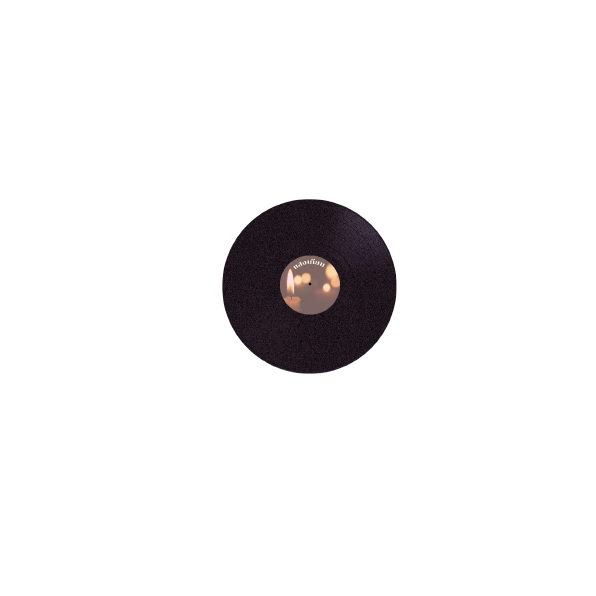
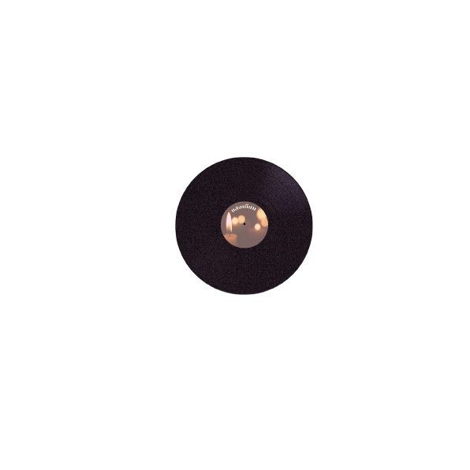

Click Record Arm To Turn record on/off.
“แสงเทียน”
(Candlelight Blues)
เพลงพระราชนิพนธ์ลำดับที่ 1
เพลงบลูส์พระราชนิพนธ์เพลงแรกที่ได้พระเจ้าวรวงศ์เธอพระองค์เจ้า
จักรพันธ์เพ็ญศิรินิพนธ์คำร้องภาษา
ไทยแต่ยังไม่โปรดเกล้าฯพระราชทาน
ให้เผยแพร่ในเวลานั้นเพราะจะทรง
แก้ไขทำนอง และคอร์ดบางตอน จึงเผยแพร่ได้ในเวลาต่อมา โดยได้
รองศาสตราจารย์ สดใส พันธุมโกมล ประพันธ์คำร้องภาษาอังกฤษ
“เนื้อเพลง”
จุดเทียนบวงสรวง ปวงเทพเจ้า
สวดมนต์ค่ำเช้า ถึงคราวระทมทน
โอ้ชีวิตหนอ ล้วนรอความตายทุกคน
หลีกไปไม่พ้น ทุกข์ทนอาทรร้อนใจ
ต่างคนเกิดแล้ว ตายไป
ชดใช้เวรกรรมจากจร
นิจจังสังขารนั้นไม่เที่ยง เสี่ยงบุญกรรม
ทุกคนเคยทำกรรมไว้ก่อน
เชิญปวงเทวดา ข้าไหว้วอน
ขอพรคุ้มไปชีวิตหน้า
ทนทรมานมามากแล้วจะกราบลา
หนีปวงโรคาที่เบียดเบียน
แสงแววชีวาเปรียบแสงเทียน
เปรียบเทียนสิ้นแสง ยามแรงลมเป่า
ชีพดับอับเฉา เหมือนเงาไร้ดวงเทียน
จุดเทียนถวาย หมายบนบูชาร้องเรียน
โรคภัยเบียดเบียน แสงเทียนทานลมพัดโบย
โรครุมเร่าร้อน แรงโรย
หวนโหยอาวรณ์อ่อนใจ
ทำบุญทำทานกันไว้เถิด เกิดเป็นคน
ไว้เตรียมผจญชีวิตใหม่
เคยทำบุญทำคุณ ปางก่อนใด
ขอบุญคุ้มไปชีวิตหน้า
ทนทรมานมามากแล้วจะกราบลา
แสงเทียนบูชาจะดับพลัน
แสงเทียนบูชาดับลับไป

 
